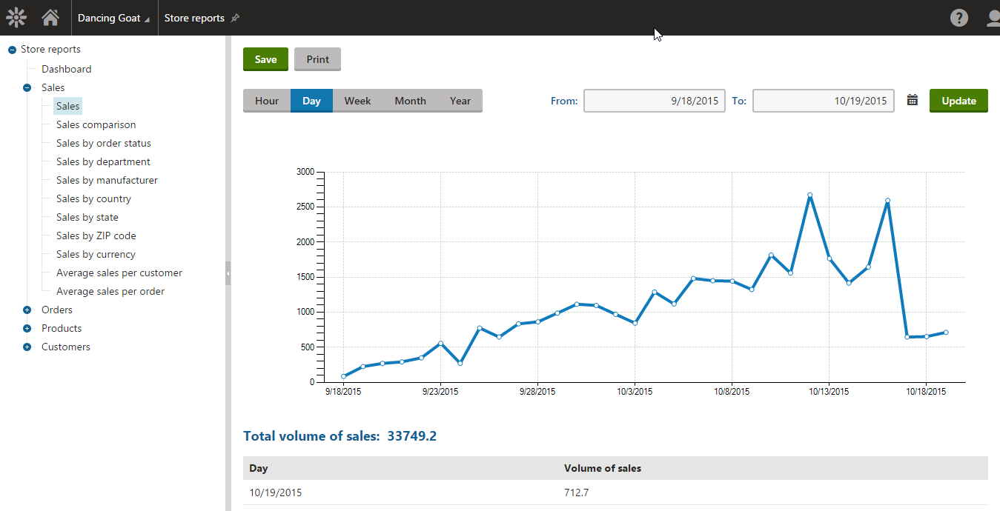

Store reports
The Kentico E-commerce Solution offers multiple interactive reports that inform you about your on-line store. All the major store sections are covered, i.e. sales, orders, products and customers. The system gathers the information during your store life cycle as individual events occur, and stores it in the database. For example, when a customer places an order or adds a product to a wishlist.
You can access E-commerce Solution reports in the Store reports application.
Viewing the information
If you select a report from the reports tree, you can view its details. Reports display information using graphs and tables, in some cases along with additional information, i.e. related values.

Viewing store reports - graph, value and table
E-commerce reports share the following characteristics:
They display enabled objects, i.e. objects allowed on the current site. While editing e-commerce objects, you can manually enable / disable most of them using the Enabled property. You can find more details in Configuring your store.
They display disabled objects if included in orders. For example, the Number of orders by country report displays countries from both enabled and disabled addresses in orders received from your customers.
They display site-specific objects, global objects or both site-specific and global objects, based on your on-line store configuration. For example, the Sales by currency report displays currencies (site-specific, global or both) as defined in the Use global settings for -> Currencies setting in Store configuration -> Store settings -> Global objects.
In tables, they sort the displayed records (from the highest to the lowest) according to specified criteria. For example, the table in the Top customers by number of orders report sorts your customers by the number of orders that they made in your on-line store (from the highest to the lowest). Similarly, the table in the Inventory report sorts the displayed records alphabetically by product name (from A to Z).
Managing report information
You can filter E-commerce reports based on various conditions, for example time period, address type, object name, etc. You can also Save, Print or subscribe to any report. The saved reports can be accessed from the Reporting application.
Additionally, you can export the data displayed in a report into external files using various formats. To export report data, right‑click on a graph or table and choose one of the offered options:
Export to Excel – exports the data displayed by the given object to an XLSX spreadsheet.
Export to CSV – exports data to a CSV file.
Export to XML – exports data to an XML file.
Store overview
The overview page allows you to personalize and view various E-commerce reports on a single page.